Problema 277 de trianguloscabri
[1] (Juan Bosco Romero) Sea A* un punto interior de BC en el triángulo ABC. Las bisectrices interiores de loa ángulos BA*A y CA*A intersecan a AB y a AC en D y E respectivamente. Demostrar que AA*, BE y CD son concurrentes.
[2] (Loeffer) Lugar geométrico del punto de concurrencia si ABC es equilátero.
[3] (J.B. Romero) Lugar geométrico de los baricentros, circuncentros, ortocentros e incentros de los triángulos A*ED, rectángulos en A*, cuando A* varia sobre BC.
Propuesto por Juan Bosco Romero Márquez.
Este documento contiene soluciones para los apartados [1] y [2]. El código fuente con las instrucciones de Mathematica está aquí.
Preliminares
Usaremos coordenadas baricéntricas:
También representaremos gráficas de curvas con ecuaciones implícitas:
Además definimos una nueva función para calcular las bisectrices del ángulo formado por dos rectas.
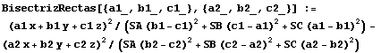
(a2 x + b2 y + c2 z)^2/(SA (b2 - c2)^2 + SB (c2 - a2)^2 + SC (a2 - b2)^2)" width="426" height="60" style="vertical-align:middle" />El problema de esta función es que devuelve el producto de las dos ecuaciones correspondientes a las bisectrices interiores y exteriores, y pocas veces es fácil separarlas. Afortunadamente, en el caso que nos ocupa, no necesitamos explícitamente las ecuaciones, sólo el lugar en que cortan las bisectrices a los lados del triángulo, por lo que los cálculos se simplificarán.
[1] (Juan Bosco Romero) Sea A*un punto interior de BC en el triángulo ABC.Las bisectrices interiores de loa ángulos BA*A y CA*A intersecan a AB y a AC en D y E respectivamente.Demostrar que AA*,BE y CD son concurrentes.
Comenzamos introduciendo las coordenadas del punto A*
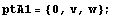
Ahora hallamos los puntos de intersección D y E.
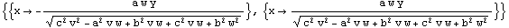
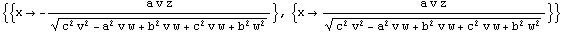
Entonces, podemos definir
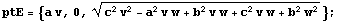
Comprobamos que AA*, BE y CD están alineados.
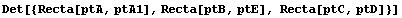

[2] (Loeffer) Lugar geométrico del punto de concurrencia si ABC es equilátero.
Esta es la solución para el caso general de cualquier triángulo ABC.
Hallemos el punto de concurrencia P de AA*, BE y CD.
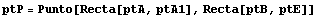
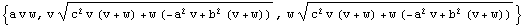
Para hallar el lugar geométrico de P, despejamos v, w de las dos últimas coordenadas y sustiuimos en la primera:
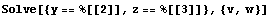
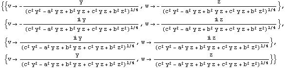
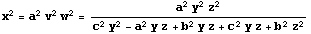
Entonces la ecuación del lugar del punto P es
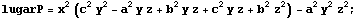
Para obtener una figura simple de esta curva consideramos un triángulo concreto y definimos una ventana para la figura:
In[14]:=
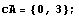
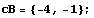
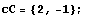
Ahora dibujamos el triángulo y la curva:
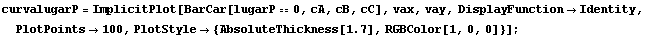
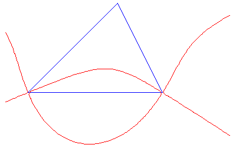
Para conseguir una descripción de esta curva, calculamos su conjugada isogonal, en busca de una fórmula más sencilla:
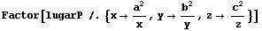
Out[22]=
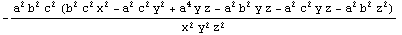
Obtenemos que la conjugada isogonal del lugar de P es una cónica. Si localizamos CINCO puntos que pertenezcan a la cónica, ésta quedará determinada. Hallemos los puntos de corte con los lados (o sus prolongaciones del triángulo ABC):
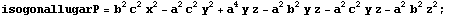
Out[24]=
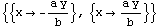
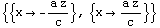
Resulta entonces que la cónica corta a la recta AB en los puntos 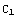 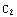 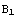 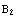
Necesitamos otro punto más de la cónica. En esta parte agradezco la ayuda de Bernard Gibert, miembro del grupo Hyacinthos, por comunicarme que los vértices Y, Z, correspondientes a B y C del triángulo tangencial XYZ de ABC también están en la cónica. Su razonamiento es que como los puntos 1:1:-1 y 1:-1:1 pertenecen claramente a la curva del lugar geométrico de P, sus puntos isogonales, es decir, los vértices del triángulo tangencial, estarán en la conjugada de la curva, la cónica.
Comprobemos directamente que los vértices Y, Z están en la cónica:
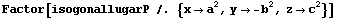

Con esto
no tenemos CINCO, sino SEIS puntos de
la cónica, por lo que dicha cónica queda determinada.
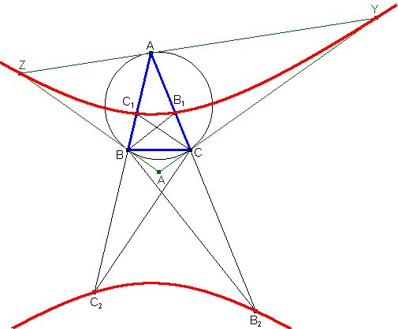
| Created by Mathematica (October 17, 2005) |